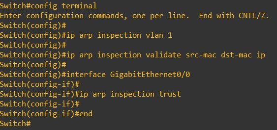
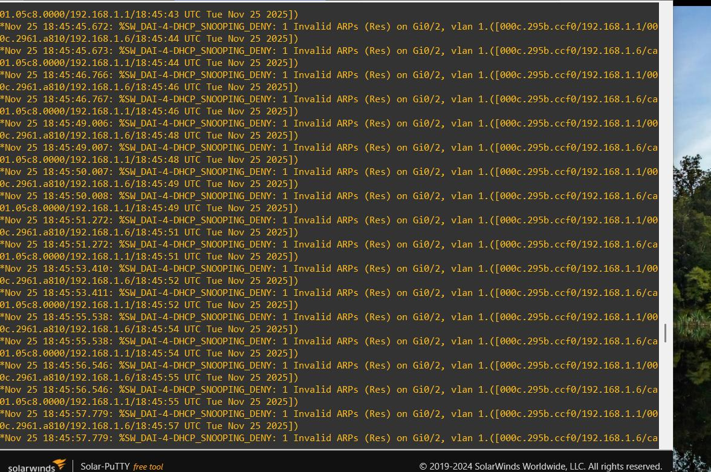

Phòng thủ ARP Spoofing – Dynamic ARP Inspection
📌 1. Tổng quan
Dynamic ARP Inspection (DAI) sử dụng DHCP Snooping Binding Table để xác thực ARP.
⚙️ 2. Cấu hình Dynamic ARP Inspection (DAI)
Tiến hành cấu hình DAI theo các bước dưới đây.

Hình 24. Lệnh cấu hình Dynamic ARP Inspection
Giải thích:
- Kích hoạt DAI trên VLAN 1.
- Chỉ định cổng trust – cổng nối đến Router hoặc DHCP Server.
- Trong bài này, cổng GigabitEthernet0/0 được cấu hình làm cổng trust.
Lệnh quan trọng:
ip arp inspection vlan 1
interface gi0/0
ip arp inspection trust
ip arp inspection validate src-mac dst-mac ip
Ý nghĩa các tham số:
- src-mac: So MAC trong Ethernet header với MAC trong ARP.
- dst-mac: Kiểm tra MAC đích trong ARP Reply.
- ip: Kiểm tra địa chỉ IP gửi/nhận.
🔍 3. Kiểm tra hoạt động của DAI
Ngay khi cấu hình hoàn tất, Switch đã phát hiện gói ARP bất thường từ máy tấn công và ghi log như hình bên dưới.

Hình 25. Switch phát hiện và chặn ARP Spoofing
Phân tích log:
%SW_DAI-4-DHCP_SNOOPING_DENY:
1 Invalid ARPs (Res) on Gi0/2, vlan 1.
([000c.295b.ccf0/192.168.1.1/000c.2961.a810/192.168.1.6])
→ Switch phát hiện ARP Reply không hợp lệ và tự động chặn.
Kiểm tra lại ARP Cache trên Windows → không còn hiện MAC trùng nhau → chứng tỏ tấn công đã bị ngăn chặn thành công.
📝 4. Quiz kiểm tra kiến thức
1. DAI hoạt động dựa trên bảng nào để kiểm tra IP–MAC?
© 2025 Cyber Ranges Platform